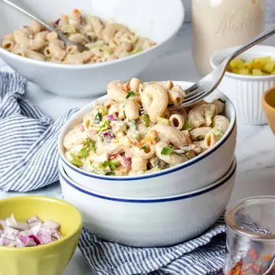

Vegan Macaroni Salad

Ingredients
- 16 ounces elbow macaroni pasta (or other preferred shape)
- 2 cups chopped sweet red/orange/yellow pepper (one kind or a mix)
- your favorite oil to sauté (or broth if oil free)
- ¼ teaspoon sea salt
- ¾ cup chopped celery
- ¾ cup chopped dill pickles
- ¼ cup dill pickle juice (from the jar)
- ¾ cup chopped red onion (soaked in cold water for a few minutes and drained (see note)
- ½ teaspoon ground black pepper
- 1 cup raw cashews (see note)
- ¼ cup cooked potato (see note)
- ½ cup cooked white beans (rinsed and drained)
- ¾ cup water
- 2 tablespoons dill pickle juice (from the jar)
- 1 ½ - 2 teaspoons sea salt (adjust for your preference)
- 1 clove garlic
- ¼ teaspoon ground mustard seed
- parsley
- paprika
- ground black pepper
Steps
- Cook pasta according to package directions.
- Once pasta is done, rinse in cold water then add it to the bowl with the veggies below.
- Saute chopped sweet pepper over medium heat using veggie broth or oil and a dash of salt. Cook until soft, about 5-7 minutes.
- Meanwhile, put celery, red onion, dill pickles, pickle juice and black pepper in a large bowl.
- Next, make the creamy dressing by putting the ingredients into a blender and blend until creamy and smooth.
- Add the creamy dressing to the bowl and mix. Taste and adjust salt as necessary. I needed an extra ½ teaspoon.
- Place in the fridge while you clean up to allow it to get cold and so the flavors can marinate completely.
- Once ready, garnish with ingredients of choice and devour!
Recipe by Anjali Shah, from The Picky Eater. Saved here for personal use; the original has the full notes, tips and photos. Open original